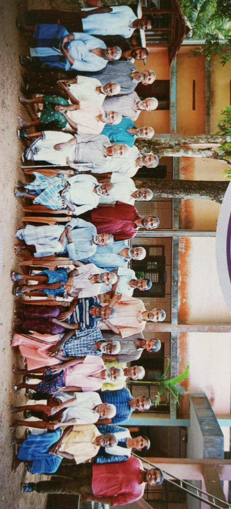
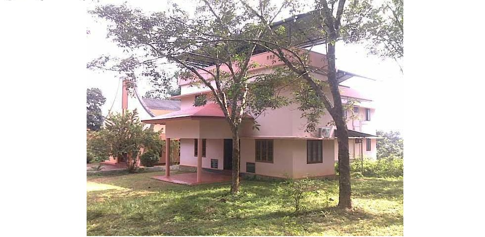
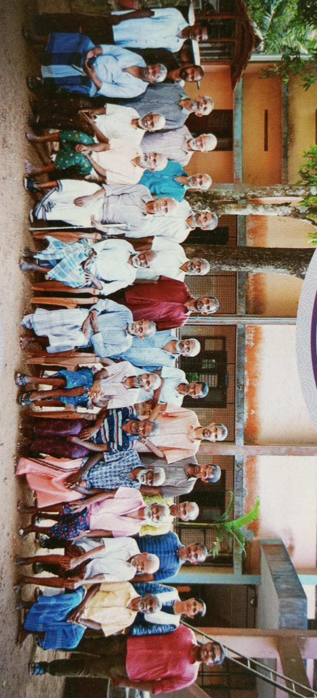
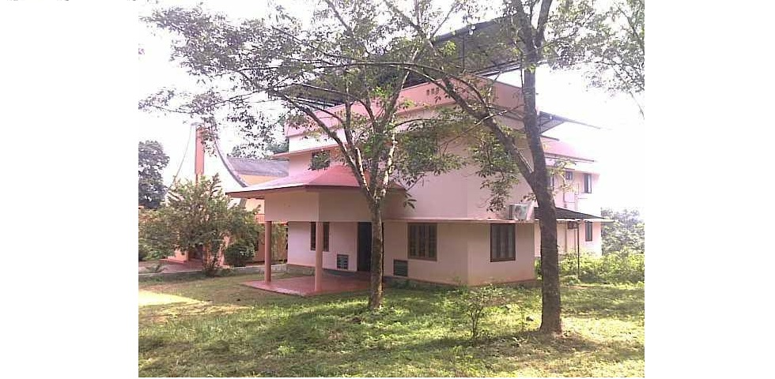

About Us / ഞങ്ങളേക്കുറിച്ച്
Malankara Orthodox Old Age Home offers a compassionate and spiritual sanctuary for senior citizens. Rooted in Orthodox Christian faith, our home provides dignified living, personal attention, and a peaceful community where elderly individuals are treated with respect and love.
മലങ്കര ഓർത്തഡോക്സ് സഭയുടെ ആശ്രമം മുതിർന്ന പൗരന്മാർക്ക് കാരുണ്യപൂർണവും ആത്മീയവുമായ സംരക്ഷണമൊരുക്കുന്നു. ഓർത്തഡോക്സ് ക്രിസ്ത്യൻ വിശ്വാസത്തിൽ ഉറച്ചുനിൽക്കുന്ന ഞങ്ങളുടെ ആശ്രമം മാന്യമായ ജീവിതം, വ്യക്തിഗത പരിചരണം, സ്നേഹവും ആദരവുമുള്ള സമുദായം എന്നിവ ഉറപ്പാക്കുന്നു.
Our Mission / ഞങ്ങളുടെ ദൗത്യമാണ്
Our mission is to serve the elderly with compassion and dignity, nurturing their body, mind, and spirit in a Christ-centered environment. We strive to foster a community of support and reverence for every individual entrusted to our care.
മദ്യസ്ഥരോടുള്ള കരുണയും മാന്യതയും പുലർത്തികൊണ്ട് അവരുടെ ശരീരം, മനസ്സ്, ആത്മാവ് എന്നിവ ക്രിസ്തു കേന്ദ്രീകൃത അന്തരീക്ഷത്തിൽ പരിപാലിക്കുന്നതാണ് ഞങ്ങളുടെ ദൗത്യം. ഞങ്ങളുടെ സംരക്ഷണത്തിലായ എല്ലാവരെയും ആദരവോടെ നോക്കുന്ന ഒരു സംരക്ഷണസമുദായം സൃഷ്ടിക്കാൻ ഞങ്ങൾ പരിശ്രമിക്കുന്നു.
Support Us / ഞങ്ങളെ പിന്തുണയ്ക്കുക
Every contribution helps us extend our services to more elderly individuals in need. Your support provides food, shelter, medical care, and spiritual nourishment.
ഓരോ സംഭാവനയും സഹായം ആവശ്യമുള്ള കൂടുതൽ മുതിർന്നവർക്ക് ഞങ്ങളുടെ സേവനങ്ങൾ എത്തിക്കുന്നതിനു സഹായിക്കുന്നു. നിങ്ങളുടെ പിന്തുണ ആഹാരം, താമസം, വൈദ്യസഹായം, ആത്മീയ പോഷണം എന്നിവ നൽകുന്നു.
Contact Us / ഞങ്ങളെ സമീപിക്കുക
Address : M G D Ashram & Karunabhavan, Near Kochuparambu, Karukachal, Kottayam Dist. Kerala - 686540
Phone: +91- 6235443399, 9847776764, 9947057066.
Email: care@orthodoxoldagehome.org
വിലാസം : എം ജി ഡി ആശ്രമം & കരുണാഭവൻ, കൊച്ചുപറമ്പിന് സമീപം, കറുകച്ചാൽ, കോട്ടയം ജില്ല,കേരള-686540
ഫോൺ: ++91- 6235443399, 9847776764, 9947057066.
ഇമെയിൽ: care@orthodoxoldagehome.org